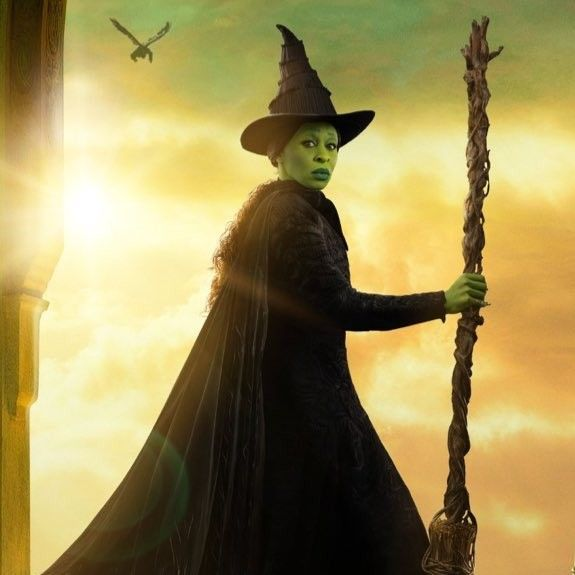

Contact
Elphaba Thropp
Sorceress & Revolutionary
📍 Emerald City, Land of Oz
✉️ elphaba@ozmail.com
🌐 Wicked - The Musical
Skills
- Advanced Spellcasting & Sorcery
- Political Activism & Advocacy
- Strategic Leadership & Resistance Organization
- Flying & Aerodynamic Magic
- Dark & Light Magic Proficiency
- Alchemy & Potion Brewing
- Public Speaking & Persuasion
Education
Degree in Sorcery & Magical Studies
Shiz University, Land of Oz
Graduated: 2005
Self-Taught Magical Mastery
Emerald City & Beyond
Certifications
- Master Spellcaster Certification
- Animal Rights Advocacy Award
- Flight Endorsement for Broomstick Navigation
Experience
Leader & Activist
Oz Resistance Movement
May 2005 – Present
- Challenged the unjust rule of the Wizard of Oz and exposed systemic corruption.
- Advocated for the rights of talking animals, ensuring their voices were heard.
- Developed advanced magical spells to protect the oppressed.
- Led resistance efforts against misinformation and propaganda.
Student & Magic Scholar
Shiz University
Aug 2002 – May 2005
- Excelled in sorcery and spellwork, surpassing all peers in magical proficiency.
- Developed a groundbreaking levitation spell, later used for broomstick flight.
- Collaborated with Dr. Dillamond on research about the discrimination against talking animals.
- Engaged in experimental magic to push the boundaries of traditional spellcasting.